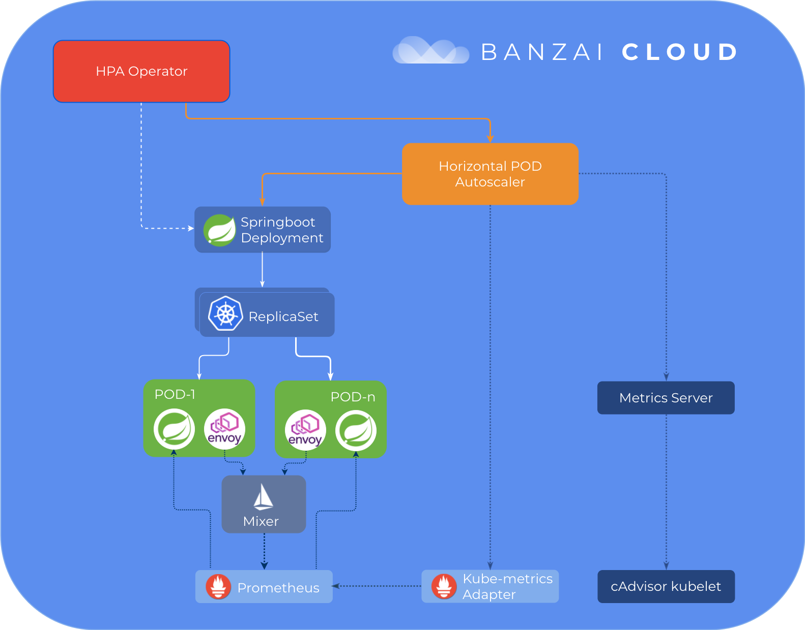

本文通过spotguides——一个示例spring-boot应用，讲了Banzai Cloud是如何通过Istio operator来实现pod水平扩展。
基于自定义Istio指标的Pod水平自动缩放
Pipeline的核心功能之一，Banzai Cloud的应用程序和devops容器管理平台，是多维的并可以基于默认和自定义指标进行自动调节。 在我们引入自定义指标后，我们选择了通过Prometheus适配器从Prometheus收集指标。 从那时起，我们的许多客户开始使用Hoizontal Pod Autoscaling，他们中的大多数人只对基本的CPU和内存指标感到满意。
我们一直都知道这不是一个理想的解决方案，我们一直在努力寻求更灵活的解决方案，以便：
- 基于自定义Prometheus指标的扩展
- 为更复杂的Prometheus查询提供扩展支持
随着我们的开源Istio operator的发布以及在Pipeline平台上广泛引入基于Istio的服务网格，我们也提供了根据自定义的Istio指标的自动缩放功能。 Prometheus现在提供网络指标，延迟，故障率以及更多指标(默认情况下从Istio中删除)。 我们的HPA operator根据这些指标决定是否扩展。
但是，在使用Prometheus Adapter时，我们的方法已不再可行，因此我们决定探索替代方案。
如果您错过了我们关于Pipeline平台所支持和自动化不同类型的自动缩放功能的系列博客，请查看这些早先的帖子：
TL;DR
- Pipeline及其HPA Operator中对重新设计的自定义指标支持的介绍。
- 使用来自Prometheus的Istio指标自动调整Spring Boot部署的示例
- 深入了解添加自定义指标后发生了什么
- 切换到另一个自定义指标适配器，kube-metrics-adapter的介绍
重新支持自定义指标
由于上面列出的原因，我们决定使用另一个自定义指标适配器，kube-metrics-adapter。
kube-metrics-adapter 是一种通用指标适配器，可以从多个来源收集和提供指标。对于每个源，都有一个Collector实现;目前，我们对其Prometheus收集器最感兴趣。
Prometheus Collector是一个通用收集器。它将Prometheus 查询映射到可由HPA 控制器用于部署自动扩展的度量标准。它的方法不同于Prometheus Adapter ，它具有预定义的规则集 - 包含针对Prometheus 运行的查询，用于将指标转换为自定义指标 - 定期执行。获取所有匹配的指标标准(因为这些查询必须是通用的并且定位所有pod和部署)，并作为自定义指标进行转换和公开。相比之下，“Prometheus collector”仅收集自定义查询返回的指标结果，其定义因部署而异，并且仅针对单个部署/ pod或服务，从而减少了存储的指标总数。该解决方案的一个缺点是，目前，用户应该避免执行性能不佳的查询。
使用ISTIO自动伸缩Spring Boot应用

我选择了流行的spotguides，基于MySQL的Sprint Boot 应用，以便在MySQL服务器旁，快速启动一个轻量级Web应用程序容器。 我使用Banzai Pipeline Beta，它支持在六个云提供商中或在本地快速启动Kubernetes集群。 Prometheus & Grafana Monitoring以及Istio是默认功能，可以通过UI开关轻松打开(Pipeline处理其余部分)。 在这个例子中，我将在Google Cloud上启动一个Kubernetes集群，并打开Monitoring and Service Mesh，并在其上部署Spring Boot Spotguide。 群集创建是我们的spotguide向导的一部分，但是，因为Service Mesh是Pipeline中的一个相对较新的功能，我们不能(迄今为止)从spotguide的流程中启用它， 所以我们必须事先创建集群。
我在这个视频中记录了这些步骤：
一旦你的Spring Boot容器和MySQL服务器启动并运行，你就可以从Spotguid 总览打开演示程序。这是一个演示应用程序，是典型的Spring Web应用程序。我们已经创建了一个GitHub代码库，你可以在里面找到示意代码（就像我们的其他spotguides一样）。默认情况下，应用程序URL将仅返回运行状况检查状态，该状态连接到Kubernetes活动和准备情况检查。然后，JVM指标将暴露给Prometheus，并且repo将集成到我们的CI/CD流中，因此，一旦您提交业务逻辑，它将自动部署到集群。在这里阅读更多关于我们的spotguides。
您可以从群集列表或详细信息页面下载Kubernetes配置，以便稍后从本地计算机获取对群集的kubectl访问权限。
我正在使用hey工具（go get -u github.com/rakyll/hey）来生成针对Spring应用程序的负载;下面的命令将每秒发出50个请求，总计10000个请求：
hey -n 10000 -q 50 https://spring-boot-custom-metrics-demo.sancyx5g25.sancyx.beta.banzaicloud.io/actuator/health/kubernetes
现在，打开监控（我们的Spotguide摘要或群集详细信息页面中提供的链接）以查看可用的指标并确定您的Prometheus 查询。 因为我们启用了Service Mesh，所有网络通信都将通过Envoy代理，将指标发送到Istio遥测服务，该服务由Prometheus抓取。
我将基于我的示例，查询基于istio_requests_total指标，该指标与Spring容器相关：
sum(rate(istio_requests_total{destination_service="spring-boot-custom-metrics-demo-spotguide-spring-boot.default.svc.cluster.local",destination_service_name="spring-boot-custom-metrics-demo-spotguide-spring-boot",destination_service_namespace="default",destination_workload="spring-boot-custom-metrics-demo-spotguide-spring-boot"}[1m]))
请务必添加相应的标签过滤器，以便专门选择与您的pod/部署相关的指标。
从部署列表页面上的Horizontal Pod Autoscaler菜单中选择spring-boot-custom-metrics-demo-spotguide-spring-boot部署，以访问HPA Edit页面。 在那里，您可以通过输入自定义指标或查询的名称来设置cpu，内存和自定义指标。
现在，如果您在更长的时间内生成另一个负载（50个请求/秒），则应在属于部署的HPA中增加副本计数：
hey -n 50000 -q 50 https://spring-boot-custom-metrics-demo.sancyx5g25.sancyx.beta.banzaicloud.io/actuator/health/kubernetes
...
kubectl get hpa
NAME REFERENCE TARGETS MINPODS MAXPODS REPLICAS AGE
spring-boot-custom-metrics-demo-spotguide-spring-boot Deployment/spring-boot-custom-metrics-demo-spotguide-spring-boot 245866m/40 1 10 7 80s
加载结束后，副本数将慢慢减少到默认的最小值：
kubectl get hpa
NAME REFERENCE TARGETS MINPODS MAXPODS REPLICAS AGE
spring-boot-custom-metrics-demo-spotguide-spring-boot Deployment/spring-boot-custom-metrics-demo-spotguide-spring-boot 266m/40 1 10 1 32m
背后的场景
让我们深入了解使用Pipeline UI向部署添加自定义指标时幕后发生的情况。 这个流程非常类似于资源指标，您可能会从之前的一系列帖子中熟悉这些指标，但是现在，让我们关注与自定义指标相关的API。
Pipeline UI使用HPA API创建/更新指标：
PUT {{pipeline_url}}/api/v1/orgs/:orgId/clusters/:clusterId/hpa
{
"scaleTarget": "example-deployment-name",
"minReplicas": 1,
"maxReplicas": 10,
"customMetrics": {
"customMetricName": {
"query": "sum({kubernetes_pod_name=~\"^example-deployment-name-pod.*\",__name__=~\"example-metric-name\"})",
"targetAverageValue": "100"
}
}
}
如果要指定绝对值，可以使用targetValue而不是targetAverageValue。 不同之处在于，targetAverageValue使用当前pod副本计数对获取的度量值进行平均。
Pipeline实际上做的是为您的部署添加以下注释：
hpa.autoscaling.banzaicloud.io/maxReplicas=10
hpa.autoscaling.banzaicloud.io/minReplicas=1
prometheus.customMetricName.hpa.autoscaling.banzaicloud.io/query=sum({kubernetes_pod_name=~\"^example-deployment-name-pod.*\",__name__=~\"example-metric-name\"})
所有这些都是通过HPA operator实现的，它根据部署注释管理HPA资源。 Pipeline在群集创建完成后，通过一个post hook，部署HPA operator，然后，如果metrics.api尚未注册，则部署kube-metrics-adapter和metrics-server。 此过程可能会有所不同，具体取决于您的云提供商和K8s版本，这些版本可能已安装了某些功能。在我们的例子中，新创建的HPA对象将如下所示：
apiVersion: v1
items:
- apiVersion: autoscaling/v1
kind: HorizontalPodAutoscaler
metadata:
annotations:
...
autoscaling.alpha.kubernetes.io/current-metrics: '[{"type":"Object","object":{"target":{"kind":"Pod","name":"example-deployment-name-customMetricName","apiVersion":"v1"},"metricName":"customMetricName","currentValue":"222m"}}]'
autoscaling.alpha.kubernetes.io/metrics: '[{"type":"Object","object":{"target":{"kind":"Pod","name":"example-deployment-name-customMetricName","apiVersion":"v1"},"metricName":"customMetricName","targetValue":"40"}}]'
metric-config.object.customMetricName.prometheus/per-replica: "true"
metric-config.object.customMetricName.prometheus/query: sum({kubernetes_pod_name=~\"^example-deployment-name-pod.*\",__name__=~\"example-metric-name\"})
...
spec:
maxReplicas: 10
minReplicas: 1
scaleTargetRef:
apiVersion: apps/v1
kind: Deployment
name: example-deployment-name
status:
currentReplicas: 1
desiredReplicas: 1
kind: List
metadata:
resourceVersion: ""
selfLink: ""
请注意，自定义度量标准是Object类型，并绑定到名为example-deployment-name-customMetricName的Pod资源。 Kube-metrics-adapter也使用注释查询来获取度量值，该值在以下端点公开/apis/custom.metrics.k8s.io/v1beta1/namespaces/default/pods/example-deployment-name -customMetricName/customMetricName，并且它正是HPA控制器将要查找的位置：
$ kubectl get --raw "/apis/custom.metrics.k8s.io/v1beta1/namespaces/default/pods/*/customMetricName" | jq .
{
"kind": "MetricValueList",
"apiVersion": "custom.metrics.k8s.io/v1beta1",
"metadata": {
"selfLink": "/apis/custom.metrics.k8s.io/v1beta1/namespaces/default/pods/%2A/customMetricName"
},
"items": [
{
"describedObject": {
"kind": "Pod",
"namespace": "default",
"name": "example-deployment-name-customMetricName",
"apiVersion": "v1"
},
"metricName": "customMetricName",
"timestamp": "2019-03-13T20:23:32Z",
"value": "222m"
}
]
}
很高兴你阅读本文，希望你有一个关于自动缩放愉快的实践体验！